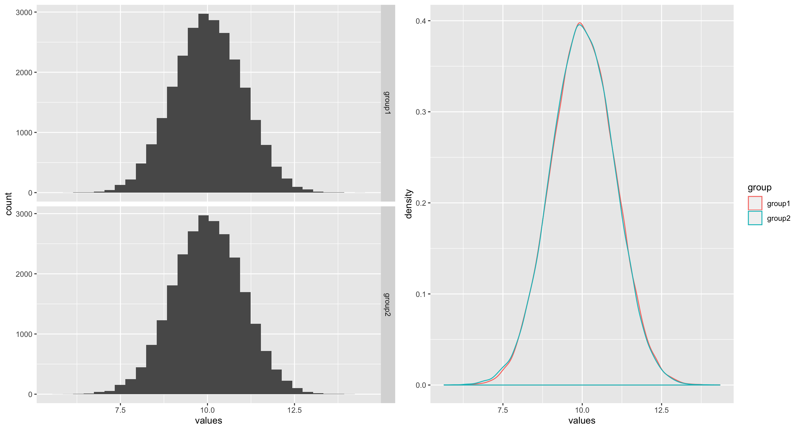
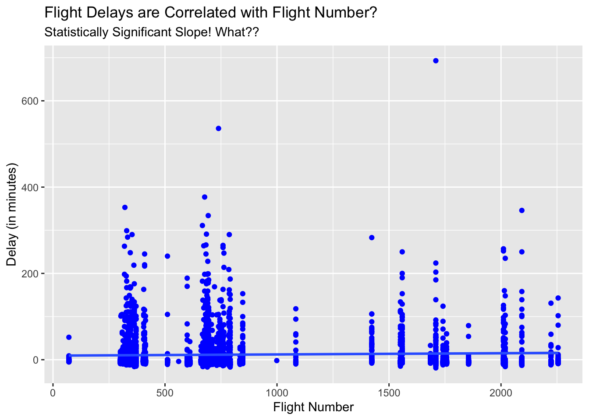

6 P-values, Jelly-Beans, and Mosquitoes
The title of this chapter is rather strange. If you keep reading, you’ll see why I included the terms “Jelly Beans” and “Mosquitoes”. The main goal of this chapter is to better understand the concept of the p-value, its limitations and misinterpretations. Let’s dive in.
6.1 What is a p-value?
The short answer is that it is a conditional probability. Then you might ask: “conditional on what?”. It is conditional on the null hypothesis. For example, suppose we are testing whether average heart rate of males is higher than that of females.
\(H_0:\ \mu_{male} = \mu_{female}\)
\(H_1:\ \mu_{male} > \mu_{female}\)
We collect data from two independent random samples. Say we have a sample mean difference of \(\bar x_{male} - \bar x_{female} = 13\) bpm (beats per minute). As good statisticians, first we ask the question: “Is this difference real or is it a result of chance?”. So we perform a two sample t test to answer this question. Suppose we got a really small p-value of .000001. How do we interpret this?
Recall that the p-value is the probability of observing a sample mean difference of 13 (or more extreme) given the null hypothesis. That is:
\[ p-value = P[(\bar X_{M} - \bar X_{F} ) \geq 13 \ | \ \mu_{M} = \mu_{F}] \]
In simple terms, all this is saying is, how likely it is to observe a sample mean difference of 13 (or more) IF males and females have similar heart rates. This is where the troubles start. Most people forget the last part of that statement. That is, they forget (or not aware of) the conditional nature of the p-value. As a result p-values get mischaracterized. Here are some examples:
The p-value is the probability that the null hypothesis is true.
1 - (p-value) is the probability that the alternative hypothesis is true.
If you carefully thought about the p-value, you’ll should see that neither of these statements is true. As mentioned earlier, this is a direct result of ignoring the conditional aspect of the p-value.
Another issue that you’ll explore in your readings will be the “prosecutor’s fallacy”. This is also a quite common mischaracterization of p-values. Let’s take the same example above. The p-value was 0.000001 (1 in a million).
Correct
If males and females have the same heart rates, then a sample difference of 13 is almost impossible to occur (1 in a million).
Incorrect
With such a big sample difference of 13 beats per minute, the chance is very small (1 in a million) that males and females have the same heart rates.
Do you see the slippery nature of p-values? Both statements look correct, but only one of them is actually correct.
The next section discusses another strange aspect of the p-values.
6.2 P-values and Large Samples.
As statisticians, we love large samples. The more information we have the better. However, we need be careful with the p-values that we get when we are dealing with very large samples. This goes at the heart of data analysis. That is, we should pay a LOT of attention to context when dealing with numbers. After all, data is simply numbers with a context. Let’s look at the following example:
Suppose you have two independent sample from two population and you wan to test the following hypothesis:
\(H_0:\ \mu_{1} = \mu_{2}\)
\(H_1:\ \mu_{1} > \mu_{2}\)
Before we jump in, let’s look at some descriptive statistics and plots about the two samples. The dataset can be accessed using the following link:
The plots below clearly shows that the two samples are almost identical both in shape and spread. Both samples have almost the same mean and median.

| Median | Mean | SD | n | |
|---|---|---|---|---|
| group1 | 10.0197 | 10.0248 | 0.994 | 25000 |
| group2 | 10.0025 | 10.0039 | 0.994 | 25000 |
The other important fact to observe is that the sample sizes are very large (25000 per group!). Now if we conduct a two sample t-test for mean difference, we get the p-value of 0.009. Normally, one would say: “there is statistically significant difference between the two group means”. Although, I would not recommend this type of language, I’m sure you may have seen statements like this in media and even in scientific publications. Along with this kind of language, comes the misunderstanding that the difference between the groups is important or practically meaningful. This is where the trouble is. Some people associate “statistical significance” with “practical significance”. What we ought to do is to estimate the magnitude of the TRUE difference between the groups and interpret that in relation to the context. A 95% confidence interval will give us a better idea of the TRUE mean difference, which in this case is [0.003, 0.038]. These values need to be put in context. For example, if the goal of the study is to find out whether the average heart rates of males and females are different, then a difference of 0.038 (upper confidence limit) beats per minutes is not practically significant although it is “statistically significant”.
The main takeaway of this example is that when you have really large samples, tiny differences become statistically significant. So, if we are not careful in interpreting the results in the right way, we’ll end up with silly statements like “males and females have a statistically significant 0.038 bpm difference in heart rates!”.
To better understand why tiny differences become statistically significant with large samples, let us look the form of the test statistic carefully. The general form of most test statistic (like the t-statistic) is:
\[\frac{Estimate - Parameter }{Standard\ Error}\]
For example, the t-statistic has the following form:
\[T = \frac{\bar X - \mu }{\frac{s}{\sqrt n}}\]
where \(\mu\) is the population mean and \(s\) is the sample standard deviation. What will happen to the T statistic if you have a large sample? How does that affect the p-value of the test, would the p-value increase or decrease? With some thought, and some rearranging of terms in the expression above, you’ll see the connection between the sample size \(n\) and the t-value and how it drives the corresponding p-value.
6.3 Slicing and Dicing the Data
The next point that we want to look at is not a problem with p-values. It is a problem with us (the practitioners of statistics)! In practice, when we are working with datasets with may variables, it is quite tempting to perform lots of analyses hoping to find something interesting. For example, consider the heart rate example we discussed above. Your main goal was to see whether males and females have different average heart rates. Suppose you collected data from many individuals and in addition to their heart rates and gender you’ve collected other information like, race, hair color, eye color, income level (high, medium, low), education level, etc.
You:: Wait, why are you collecting all these other data?.
Statistician: Well…, they are here for the test and we just wanted to get some background information. After all, it does not cost us or them anything to have this extra information. It is better to have more than less, right?
You: I guess…
This is where the trouble starts. Suppose you conduct the test and you did not find any difference between the two groups (males vs. females). If you are gung ho about your theory(hypothesis) that there exist some difference in heart rates between males and females, then you will be quite disappointed to see that the data says something contrary to your hypothesis. Rather than accept the this reality, you go on quest to “prove” it somehow. That is, you start torturing the data until it confess. What do I mean by this?
This is where the extra variables you collected come in to play. For example, you can test:
African American males vs African American females OR
African American males vs White females OR
.
.
.
- White males with dark hair and blue eyes with low education and in low income level vs. White females in with blond hair and green eyes with high education and in high income level.
The choices are endless (and stupid!). This kind of subgroup testing is what I call slicing and dicing the data. When you perform a lot of tests like this, the likelihood of you finding a statistically significant p-value is very high. In fact, you can show (we’ll do it in class) that this probability grows exponentially with the number of different subgroup tests you perform. So you are bound to find “something” even if there is nothing there. The following cartoon illustrates this phenomena quite beautifully.
The jelly bean story: https://xkcd.com/882/
Another funny one: https://xkcd.com/1478/
Now you might say, “Well, this is a cooked-up example. No one in their right mind do such egregious things”. You are absolutely right. But the reality is entirely different from what we’d like to believe. The following article is a powerful example of this unfortunate practice.
A recent example: Cornell scientist turned shoddy data into viral studies about what we eat:
https://www.buzzfeednews.com/article/stephaniemlee/brian-wansink-cornell-p-hacking
A Slightly Different Example
To drive this point home about p-values are good but humans are not, consider the following regression model and its p-value for the slope coefficient. Can you think what is going on in this case?
The data:
Here is the plot:

| Delay | |||
|---|---|---|---|
| Predictors | Estimates | CI | p |
| (Intercept) | 9.45 | 7.13 – 11.77 | <0.001 |
| FlightNo | 0.00 | 0.00 – 0.01 | 0.020 |
| Observations | 4029 | ||
| R2 / R2 adjusted | 0.001 / 0.001 | ||
Can you find what is wrong with the above analysis?"
P-values in the Courtroom
The Supreme Court of the United States in March 2011 decided the case Matrixx Inc vs. Siracusano. The company Matrixx Inc. is the manufacturer of the cold medicine Zicam. They publicly dismissed reports linking Zicam and anosmia (loss of the sense of smell) when it had evidence of a biological link between ingredients of Zicam and anosmia.
They used the term “statistically significant” to hide their misdeeds. They told a lower court that they did not disclose the adverse effects because the differences between Zicam users and others were not statistically significant. But the Supreme Court disagrees. In delivering the opinion for a unanimous Court, justice Sonia Sotomayor said:
"A lack of statistically significant data does not mean that medical experts have no reliable basis for inferring a causal link between a drug and adverse events.
The FDA similarly does not limit the evidence it considers for purposes of assessing causation and taking regulatory action to statistically significant data. In assessing the safety risk posed by a product, the FDA considers factors such as “strength of the association,” “temporal relationship of product use and the event,” “consistency of findings across available data sources,” “evidence of a dose-response for the effect,” “biologic plausibility,”…..
Assessing the materiality of adverse event reports requires consideration of the source, content, and context of the reports. This is not to say that statistical significance (or the lack thereof) is irrelevant–only that it is not dispositive of every case."
More information: https://www.oyez.org/cases/2010/09-1156
Summary
When dealing with really large samples, we need to be extra careful with the p-values. Why? Because, tiny differences become statistically significant and as a result we may be tempted to believe that there is something “important” with the data. Always pay attention to context and think about practical significance and don’t fall in love with statistical significance.
The more tests you perform, you are bound to find “something”. Then people have the tendency to come up with a “cute story” to justify the results. As you can see, the issue is not with p-values, it is with us. The practitioners of statistics (us) are responsible for this mess.
I would like to close this chapter with the following remarkable quote. It captures the essence of this chapter.
“p-values are like mosquitoes. They have an evolutionary niche somewhere and no amount of scratching, swatting, and spraying will dislodge them.” – Campbell, J. P. (Editor): Journal of Applied Psychology, 67(6), 691–700. (1982)